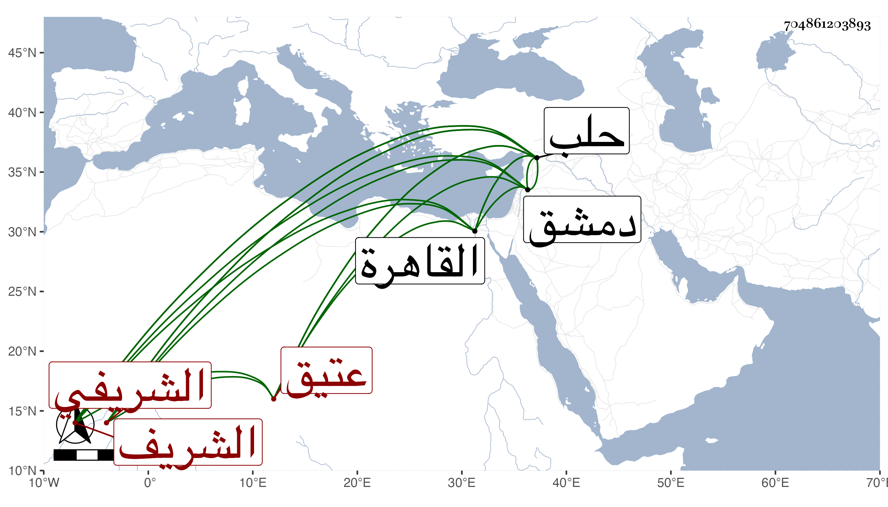

0902Sakhawi.DawLamic.ITO20230111-ara1.EIS1600.704861203893
Biography ID: 704861203893
52
طيبغا ويسمى عبد الله أيضا الشريفي عتيق الشريف شهاب الدين نقيب الاشراف بحلب . سمعه مع أولاده من الجمال بن الشهاب محمود وتعلم الخط معهم من الشيخ حسن ففاق في الخط الحسن بحيث كتب الناس عليه ، واستقر في وظيفة تعليم الخط بالجامع الكبير ثم أجلسه الكمال بن العديم مع العدول وفر في الكائنة العظمى إلى دمشق فأقام بها مدة ، وحدث بها وعلم الخط إلى أن مات في آخر سنة خمس عشرة . ذكره شيخنا في إنبائه تبعا لابن خطيب الناصرية ، ونقل عنه أنه قال كتبت عليه بحلب ، وقرأت عليه الحديث بالقاهرة في سنة ثمان وثمانمائة .
